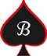
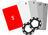
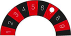

Vous
Votre soirée
Vos jeux
Récapitulatif
Confirmation
A propos de vous
Pour garder le contact plus aisément, merci de remplir les champs suivants
Votre soirée
Dites-nous en plus sur la soirée que vous voulez organiser
Vos jeux
Cliquez sur les icônes des jeux que vous désirez louer


